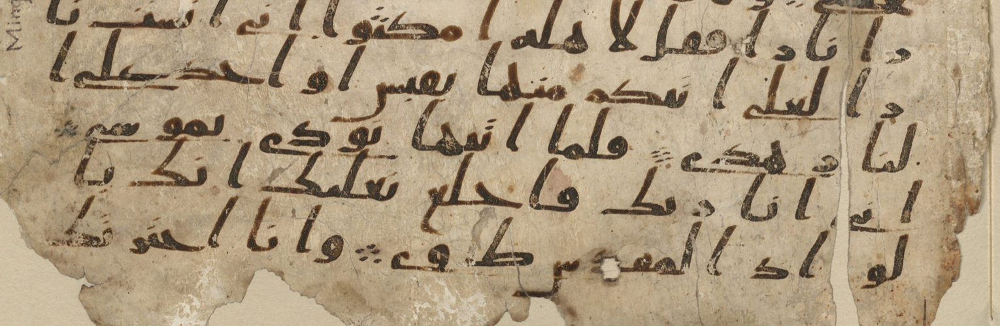

01 · SOURCE LOCKED
قراءة الأوكتتاتRead octets
تدخل 23 قيمة مشتقة منشورة كما هي، من دون إعادة تفسير.Twenty-three published derived values enter unchanged.
- الملفFile
docs/adg-cipher.js- العقدContract
RASM[index] → i32- الحوسبةCompute
23 octets
ANNEX / INTELLIGENCE
هذه الصفحة تشرح، بلا مبالغة ولا اختصار مخلّ، ما الذي يرسمه التمثيل الحي في الصفحة الرئيسة. كل رقم هنا مشتقّ من ترميز عام قابل لإعادة الحساب، ولا يُنشر منه أي جدول أقنعة أو قاعدة توجيه أو عتبة أو وزن.
This page explains exactly what the live visual on the main page draws. Every number here is derived from public encoding and can be recomputed independently. No mask table, routing rule, threshold or weight is published.
01 / SOURCE
التجريد الذي بُني عليه المحلل يعالج الرسم كما كُتب أولًا: بلا تنقيط وبلا تشكيل. ولإثبات ذلك لا نعيد كتابة النص، بل نعرض شاهدًا مصوّرًا من مخطوطة عامة الملكية.
The abstraction reads the rasm as it was first written: without dots and without vowel marks. Rather than retyping the text, the annex reproduces a public-domain manuscript witness.
مصدر الصورة: Birmingham Quran manuscript full — مؤلّف مجهول، عامة الملكية، عبر ويكيميديا كومنز. المعروض أدناه قصٌّ من هذا الملف دون أي تعديل على الرسم. Image source: Birmingham Quran manuscript full — Anonymous, unknown author, Public domain, via Wikimedia Commons. What follows is a crop of that file with no alteration to the script.

الشاهد معروض للتوثيق فقط. المرجع النصّي المستعمل في الحساب هو القرآن ٢٠:١٣، وهو الموضع الذي جرى تحليله فعليًا. The witness is reproduced for documentation only. The textual reference used in the computation is Quran 20:13, the location the analyser actually parsed.
02 / NUMBERS
الآية خمس كلمات. طولها بترميز UTF‑8 أربعة وثمانون بايتًا، منها ثمانون للحروف وأربعة للفواصل بين الكلمات. ورسمها ثلاث وعشرون وحدة، وكل وحدة بايت علم واحد، أي مئة وأربعة وثمانون بتًا.
The verse is five words. Its UTF-8 length is eighty-four bytes: eighty for the letters and four for the separators between words. Its rasm is twenty-three units, one flag byte each, so one hundred and eighty-four bits.
| الكلمةWord | بايتات UTF‑8UTF-8 bytes | وحدات الرسمRasm units | بتات العلمFlag bits | بايتات العلم (ست عشري)Flag bytes (hex) |
|---|---|---|---|---|
| 1 | 14 | 4 | 32 | 48 27 BA 27 |
| 2 | 22 | 6 | 48 | 27 2D BA 31 BA 43 |
| 3 | 22 | 6 | 48 | A1 27 33 BA 45 39 |
| 4 | 10 | 3 | 24 | 44 45 27 |
| 5 | 12 | 4 | 32 | 6E 48 2D 49 |
| المجموعTotal | 80 + 4 = 84 | 23 | 184 | 85 بتًا مضاءً85 set bits |
03 / DERIVATION
بايت العلم لكل وحدة رسم هو الثمانية بتات الدنيا من القيمة العددية العامة لمحرفها في يونيكود. لا شيء غير ذلك. أي قارئ يستطيع إعادة الحساب من جدول يونيكود وحده والوصول إلى البايتات نفسها المنشورة أعلاه.
The flag byte of a rasm unit is the low octet of the public Unicode scalar of its character. Nothing else enters. Any reader can recompute the published bytes from the Unicode tables alone.
flag = codePoint & 0xFF
مثال محسوب — الوحدة رقم صفر: بايت العلم 0x48، أي 0100 1000. البتّان المضاءان هما في الموضعين ٦ و٣، ومجموع البتات المضاءة اثنان، فتفتح زهرة ذات بتلتين. رقما البتّ العامّان لهذين الموضعين هما ١ و٤.
Worked example — unit zero: flag byte 0x48, that is 0100 1000. Two bits are set, at positions 6 and 3, so a two-petal flower opens. Their global bit indices are 1 and 4.
تنفّذ وحدة WebAssembly العامة الدالتين flag_bit وflag_popcount على هذه الأوكتتات المنشورة فقط. لا تحلل الوحدة نصّ الآية، ولا تحتوي المحلل العربي الخاص أو أي جدول أقنعة محمي.
The public WebAssembly module executes flag_bit and flag_popcount over these published octets only. It does not parse the verse and contains neither the private Arabic analyser nor any protected mask table.
04 / READING
التمثيل تطوير حتمي للغة البصرية في دراسة CNS Cipher → Bloom المضمّنة داخل صفحة سرمد الواحدة. يحتفظ بتحول الرمز إلى زهرة وهالتها وشفافيتها، ويستبدل القيم العشوائية بالأوكتتات والبتات المنشورة أعلاه.
The visual is a deterministic adaptation of the visual grammar in the CNS Cipher → Bloom study embedded in Sarmad's single page. It retains the cipher-to-flower transition, halo and translucency while replacing random values with the published octets and bits above.
trace_void
Deterministic read, bit decode, bloom, quiet, then a trace_void call
05 / ROUTE
قبل بدء الرسم، تحسب وحدة WebAssembly البتات وعددها باستدعاء flag_bit وflag_popcount، ثم تعيد الصفحة عرض الناتج الحتمي عبر WebGPU عند توفره أو Canvas2D بديلًا: قراءة الأوكتت، وفك نمطه، وتحويل البتات المضاءة إلى زهور، ثم الهدوء. تستعير الحركة العلامات IF وID وEX وMEM وWB لشرح هذا التسلسل البصري فقط؛ وهي ليست قياسًا أو تسجيلًا لمراحل معالج مادي.
Before drawing starts, the WebAssembly module computes the bits and their count through flag_bit and flag_popcount. The page then replays that deterministic result through WebGPU when available or Canvas2D as a fallback: octet read, pattern decode, set-bit bloom, then quiet. The motion borrows IF, ID, EX, MEM and WB solely to explain this visual sequence; it is not a measurement or recording of physical processor stages.
void لا يعني عمومًا أن الدالة لا تكتب في الذاكرة؛ لذلك لا ندّعي ذلك من اسم النوع. الدليل هنا خاص بالدالة العامة trace_void: لا تستقبل بيانات، ولا تعيد قيمة، ويقارن اختبار النشر الذاكرة الخطية كاملة قبل الاستدعاء وبعده ويثبت عدم تغيّرها. لهذا تبقى MEM وWB خافتتين في هذا التمثيل وحده.
void does not generally mean that a function cannot write memory, so no such claim is inferred from the type name. The evidence here is specific to the public trace_void function: it accepts no data, returns no value, and the release test compares the complete linear memory before and after the call and confirms it is unchanged. That is why MEM and WB remain dim in this visual only.
06 / TRACE BOARD
المقصود بالدقة الذرية هنا هو أن أصغر حبيبة مرئية هي بت واحد؛ وليست نسبة دقة لنموذج ذكاء اصطناعي. تسجل اللوحة ما يراه الإنسان، والملف الذي ينفذه، وعقد الاستدعاء العام، ومقدار الحوسبة القابل لإعادة الحساب.
Atomic precision here means that the smallest visible grain is one bit; it is not an AI-model accuracy score. The board records what a person sees, the implementing file, the public call contract and the recomputable compute amount.
قراءة 23 أوكتتًا، ثم فك 184 موضع بت، ثم تفتّح 85 بتًا مضاءً في 335 بتلة، ثم وصول العناصر العابرة إلى الصفر، ثم استدعاء trace_void بلا قيمة عائدة وبلا تغير في ذاكرة WebAssembly. Read 23 octets, decode 184 bit positions, bloom 85 set bits as 335 petals, settle transient elements to zero, then call trace_void with no return value and no WebAssembly memory change.
01 · SOURCE LOCKED
تدخل 23 قيمة مشتقة منشورة كما هي، من دون إعادة تفسير.Twenty-three published derived values enter unchanged.
docs/adg-cipher.jsRASM[index] → i3223 octets02 · ANALYSER VERIFIED
يُفحص كل أوكتت في مواضعه الثمانية؛ الناتج صفر أو واحد.Every octet is tested at its eight positions; the result is zero or one.
wasm/evidence_match.rsflag_bit(i32,i32) → i32184 calls03 · RENDER LIVE
البت المضاء وحده يزهر؛ وعدد البتلات يساوي عدد البتات المضاءة في أوكتته.Only a set bit blooms; its petals equal the set-bit count of its octet.
docs/adg-cipher.js · WGSL · wasm/evidence_match.rsflag_popcount(i32) → i3285 blooms · 335 petals04 · TRANSIENT CLEAR
تصل طاقة العناصر العابرة إلى الصفر وتبقى شبكة الدليل.Transient energy reaches zero while the evidence lattice remains.
docs/adg-cipher.jsphase envelope → 01 draw · 4,518 vertices/frame05 · VOID VERIFIED
voidالدالة المحددة لا تعيد قيمة، والذاكرة الخطية لا تتغير في اختبار ما قبل الاستدعاء وما بعده.This specific function returns no value, and linear memory is unchanged in the before-and-after test.
wasm/evidence_match.rs · scripts/verify-wasm.mjstrace_void() → ()Δ memory = 0 · return = noneسجل التتبّع والحوسبة بصيغة JSONTrace and compute record as JSON ↗ عقود الاستدعاء أعلاه ليست سجلًا لمكدس معالج مادي. The call contracts above are not a captured physical-processor stack.
07 / BOUNDARY
المنشور في هذه الصفحة وفي شفرتها هو القيم المشتقة من ترميز يونيكود العام فقط. لم يُنشر ولن يُنشر هنا: جدول الأقنعة، أو قاعدة التوجيه، أو أي عتبة، أو أي وزن، أو أي ملفّ نموذج. ولا يُكتب نصّ الآية في الشفرة؛ الشاهد المصوّر أعلاه هو التضمين المصرَّح به.
What this page and its source publish are values derived from public Unicode encoding only. Not published here, and never to be: the mask table, the routing rule, any threshold, any weight, any model artefact. The verse text is not typed into the source; the manuscript witness above is the authorised embedding.
كل ما سبق قابل لإعادة الحساب من هذه الصفحة وحدها. ما لا يمكن إثباته من هذه الصفحة لا يُدّعى فيها.
Everything above is recomputable from this page alone. Anything that cannot be evidenced from this page is not claimed on it.